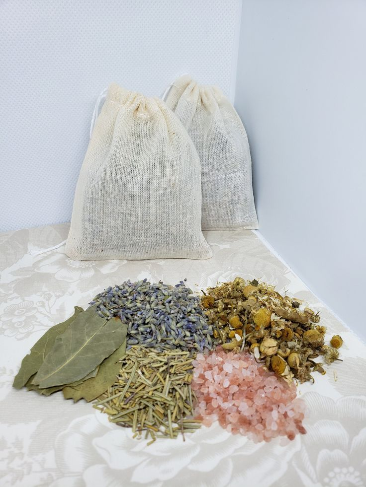

Welcome to Tarot with Krishna,
Step into the mystical world of tarot, where the past, present, and future converge in a tapestry of symbols and intuition. Welcome to a realm of ancient wisdom and spiritual guidance, where the art of tarot card reading unfolds like a captivating story waiting to be told.
Meet our Tarot Card Reader
Hi this is Supriya,
I am a seasoned Tarot card reader and compassionate spiritual guide. With profound insight and intuitive wisdom, I offer transformative guidance, helping you navigate life's twists and turns. Let my cards unveil your hidden truths and illuminate the path to enlightenment and inner peace. Welcome to a journey of self-discovery.
REMEDIES

Mojo Bag
Daily Affirmations
Crystal Healing
Confused WHY TAROT?

Positive Affirmation
Tarot readings can boost self-esteem and confidence by highlighting your strengths and positive qualities and also it is a tool for spiritual exploration, helping you connect with your inner wisdom and the universal energies that surround you.